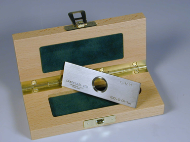
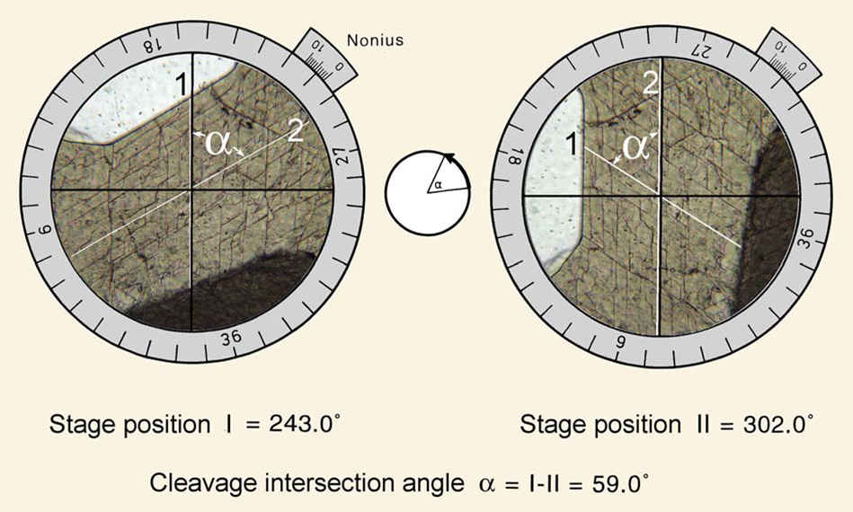
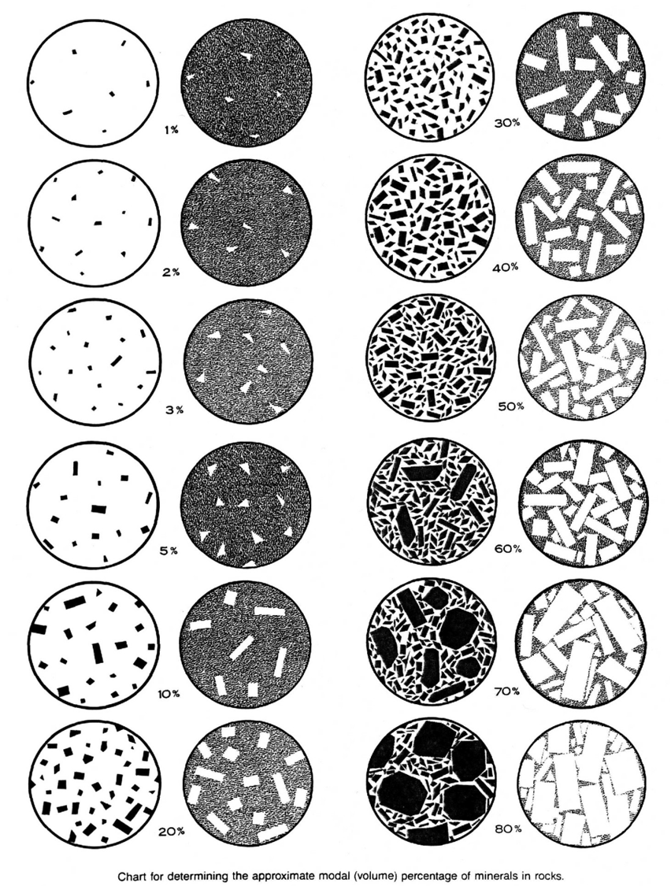
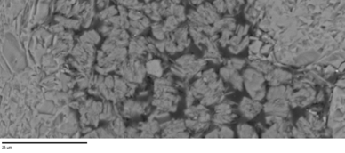
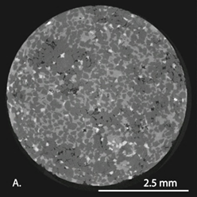
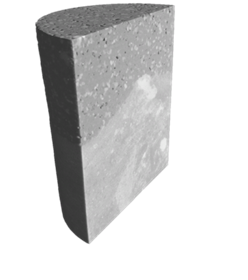
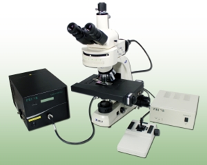
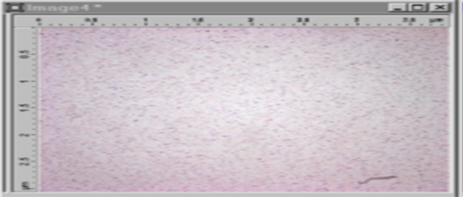
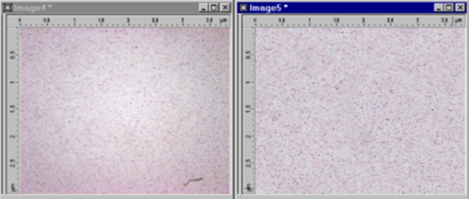
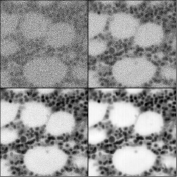

Basic principles of digital thin section analysis obtained by optical microscopy, including image processing and 2D image
analysis
thin section analysis
Other methods of analysis of geomaterials may be used in conjunction with this technique
petrographic thin sections often provide crucial basic information
Which information can be obtained from a thin section using a petrographical microscope?
Which information can be obtained from a thin section using a petrographical microscope?
Measuring dimensions of grains, pores, etc
Measuring cleavage, fractures,…
Determining porosity percentage
Determining mineral distribution
...
Thin section analysis
Traditional methods of quantifying and analyzing thin sections involve measuring features with a micrometer or eyepiece
graticule:
eyepiece graticuleview of eyepiece graticule compared to stage micrometer

stage micrometer slide

Thin section analysis
Traditional methods of quantifying and analyzing thin sections
1) measuring features by doing visual estimations with the aid of published estimation charts
What is the percentage of black minerals in this section?
5%
10%
30%
50%
80%
What is the percentage of black minerals in this section?
30%
What is the percentage of white minerals in this section?
5%
10%
30%
50%
80%
What is the percentage of white minerals in this section?
30%
What is the percentage of white minerals in this section?
5%
10%
30%
50%
80%
What is the percentage of white minerals in this section?
50%
What is the percentage of black minerals in this section?
50%
60%
70%
80%
90%
What is the percentage of black minerals in this section?
70%

Thin section analysis
Traditional methods of quantifying and analyzing thin sections:
2) Using variations on point counting: counting the relative proportion of different minerals or features by recording
what appears at the intersections along a superimposed grid
Thin section analysis
Due to the fast growing development in optical microscopy and digital imaging, it is possible today to obtain massive amounts
of digital image data from thin sections and analyse them in a rapid and reliable way.
2D image analysis
2D image analysis (IA)
IA systems incorporate many of the same measurements that have been used by petrographers using manual methods
BUT: saving in time is achieved by using analysis algorithms in conjunction with a computer.
2D image analysis (IA)
Earliest systems:
often required in-house programming
were instrument-specific
often limited by computer memory and processing speeds.
Today, a variety of comprehensive image analysis packages are available
Who already worked with 2D digital image analysis software for mineralogical research?
2D image analysis
For each type of material and research application:
specific protocols for differentiating (or segmenting) the components and/or features of interest are needed.
2D image analysis
For example, a mineral might vary in size, colour, and shape within a thin section
or
it may be very close in size, colour, and shape to another mineral in the thin section.
2D image analysis
A good IA software package easily allows one to:
manipulate image contrast and brightness
apply a variety of different filters and algorithms to the images in order to enhance features of interest.
2D image analysis
Once the features of interest can be separated reliably by software: decisions need to be made regarding what data should
be collected in order to answer specific research questions.
2D image analysis
Now a variety of IA packages are available:
Digital microscope cameras equipped with an analysis package
Other more comprehensive packages commercially available (like Image-Pro Plus)
some packages as free downloads online (like ImageJ).
2D image analysis
advantages of free online downloads:
no need to spend time writing in-house programs; more time and focus can go towards the actual analysis of thin sections
and interpretation of results
The IA work of each laboratory can more readily be duplicated by others if it uses a program that is easily available,
written to run with standard systems and equipment, and includes detailed documentation and avenues for technical assistance.
2D image analysis: representativity. How would you make sure your samples are representative and that the IA results are
statistically valid?
A minimum of 1000 thin sections is required
A detailed geological study is required to obtain samples which include any variation present.
A statistical study is always required to report anything valuable
2D image analysis: representativity
In digital image analysis: samples need to be representative of the material being examined + analysis is done in such
a way as to ensure that results have statistical validity.
samples must be large enough that they include any variation present.
Depending on the type of material and the research questions following parameters will vary:
size and number of specimens taken
sampling strategy (random or systematic)
number of areas withing each sample that are analyzed
the method for selecting those areas
...
For all studies, these details need to be carefully considered and reported.
REV



digital optical microscopes
Modern microscopes tend to come with a PC
options for automation with a range of functions. Motors automatically move compounds like the objective and the substage
condenser, motorized stage; all of which is optimized quite automatically for quality of illumination, resolution and
even focus.
Combined with digital image capture systems and image analysis software, we now have a real possibility of automated sample
examination.

Do you think full automatic IA of digital photos is an advantage for analysing thin sections?
yes
no
Why digital optical microscopes?
Latest digital cameras + powerful computer software => high image quality
Digital cameras: easy to use, greater flexibility for image manipulation and storage.
due to digital technology: reduction of delivery times for petrographic investigations.
No film or processing fees.
Why digital optical microscopes?
Digital imaging is almost instantaneous.
Digital photomicrographs are easy to put on internet.
Note: IA techniques are only accurate if sufficient image contrast is present to allow accurate identification of the subject
being measured + the results are only valid if the plane section analysed is truly representative of the sample.
Digital optical microscope
The quality of the final image depends on the quality of the original microscope image.
No matter how good the camera is, it cannot produce outstanding images from a poorly configured microscope!
What to look for in a digital camera?
The transferring speed of images to the PC
Live image stream: (for focusing and positioning ) - (on camera or live on a PC screen).
Camera is easily attachable from microscope so it can be used for a variety of tasks around the laboratory
Some important aspects when acquiring a digital image
Focussing
Important to focus the optics correctly to capture the fine details in the image.
Often the human eye is used to perform this task manually.
In some situations, automatic focusing is required.
In many cases focusing is accomplished in software by stepping the optics through a range of settings and choosing the
one that gives the “best” picture.
effect of focus
White balance
effect of white balance
White balance
The colour spectrum of the illuminating microscope lamp varies with voltage and hence the colour of the resulting image
will also vary as the lamp intensity is changed.
effect of white balance
Shading correction
If you acquire an image from a clear field (e.g. a clear glass slide), you may find that the image is not uniform (e.g.
it may be slightly brighter in the centre of the field than at the edges) => due to optical aberrations and variations
in illumination.

clear field image
Shading correction
A digital correction can correct for this non-uniformity

clear field image
Noise
When the number of photons (or other particles) collected for each image pixel is low, statistical fluctuations and random
noise become important.

the effects of noise
Noise
the noise level: signal-to-noise ratio
The best approach to noisy images, is to collect more signal (by increasing the exposure time) and improve the statistics.
the effects of noise
Noise
Signal-to-noise ratio = 1/1Signal-to-noise ratio = 1/3Signal-to-noise ratio = 1/7